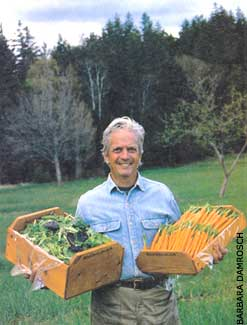
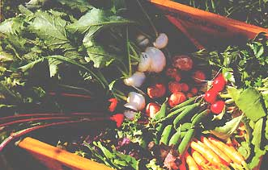

New ideas, especially those that directly challenge an established orthodoxy, follow a familiar path. First, the orthodoxy says the new idea is rubbish. Then the orthodoxy attempts to minimize the new idea's increasing appeal. Finally, when the new idea proves unstoppable, the orthodoxy tries to claim the idea as its own. This is precisely the path organic food production has followed.
First, organic pioneers were ridiculed. Then, as evidence of the benefits of organic farming became more obvious to more people, mainstream chemical agriculture actively condemned organic ideas as not feasible. Now that the food-buying public has become enthusiastic about organically grown foods, the food industry wants to take over. Toward that end the U.S. Department of Agriculture-controlled national definition of "organic" is tailored to meet the marketing needs of organizations that have no connection to the agricultural integrity organic once represented. We now need to ask whether we want to be content with an "organic" food option that places the marketing concerns of corporate America ahead of nutrition, flavor and social benefits to consumers.
When I started as an organic grower 35 years ago, organic was a way of thinking rather than a "profit center." The decision to farm organically was a statement of faith in the wisdom of the natural world, to the quality of the crops and livestock, and to the nutritional benefits of properly cultivated food. It was obvious that good farming and exceptional food only resulted from the care and nurturing practiced by the good farmer.
The initial development of organic farming during the first half of the 20th century arose from the gut feelings of farmers who were trying to reconcile the biological truths they saw in their own fields with the chemical dogma the agricultural science-of-the-moment was teaching. The farmers came to very different conclusions from those of the academic agronomists. The farmers worked on developing agricultural practices that harmonized with the direction in which their "unscientific" conclusions were leading them. Their goals were to grow the most nutritious food possible, while protecting the soil for future generations.
The development and refinement of those biologically based agricultural practices continues today. It's what makes this farming adventure so compelling. Each year I hope to do things better than I did last year because I will know Nature's systems better. But my delight in the intricacies of the natural world - my adventure into an ever deeper appreciation of the soil-plant-animal nutrition cycle and how to optimize it - is not acceptable to the homogenized mentality of mass marketing. The food giants that are taking over "organic" want a simplistic list of ingredients so they can do organic-by-the numbers. They are derisive about what they label "belief systems," and they are loath to acknowledge that more farmer commitment is involved in producing real food than any number of approved inputs can encompass.
The transition of "organic" from small farm to big time is now upon us. Although getting toxic chemicals out of agriculture is an improvement we can all applaud, it only removes the negatives. The positive focus, enhancing the biological quality of the food produced, is nowhere to be seen. The new standards are based on what not to do rather than what to do. They will be administered through the USDA, whose director said recently, "Organic food does not mean it is superior, safer or more healthy than conventional food." Well, I still agree with the old-time organic pioneers. I believe that properly grown food is superior, safer and healthier. I also believe national certification bureaucracies are only necessary when food is grown by strangers in far away places rather than by neighbors you know. I further believe good, fresh food, grown locally by committed growers, is the very best to be found.
In my opinion, "organic" is now dead as a meaningful synonym for the highest quality food. Responsible growers need to identify not only that our food is grown to higher, more considered standards, but also that it is much fresher because it is grown right where it is sold. Therefore, we have come up with a new term, one we define to mean locally grown and unprocessed, in addition to exceptional quality. ( See below .) It's a term we hope will be used, as "organic" was used when we began, by those local grow ers who accept that if you care first about the quality of what you produce, a market will always be there. We now sell our produce as "Authentic Food." We invite other serious growers to join us.
Interested growers can contact Eliot at Four Seasons Farm, 587 Weir Cove Road, Harborside, Maine 04642.-Mother
A seal of quality from a farm near you
The label "organic" has lost the fluidity it used to hold for the growers more concerned with quality than the bottom line, and consumers more concerned with nutrition than a static set of standards for labeling. "Authentic" is meant to be the flexible term "organic" once was. It identifies fresh foods produced by local growers who want to focus on what they are doing, in stead of what they aren't doing. (The word authentic derives from the Greek authentes: one who does things for him or herself.) The standards for a term like this shouldn't be set in stone, but here is what I would like for growers to focus on:
• All foods are produced by the growers who sell them.
• Fresh fruits and vegetables, milk, eggs and meat products are produced within a 50-mile radius of their place of their final sale.
• The seed and storage crops (grains, beans, nuts, potatoes, etc.) are produced within a 300-mile radius of their final sale.
• Only traditional processed foods such as cheese, wine, bread and lactofermented products may claim, "Made with authentic ingredients."
• The growers' fields, barns and greenhouses are open for inspection at any time, so customers, themselves, can be the certifiers of their food.
• All agricultural practices used on farms selling under the "authentic" label are chosen to produce foods of the highest nutritional quality.
• Soils are nourished, as in the natural world, with farm-derived organic matter and mineral particles from ground rock.
• Green manures and cover crops are included within broadly based crop rotations to maintain biological diversity.
• A "plant positive" rather than "pest negative" philosophy is followed, focusing on correcting the cause of problems rather than treating symptoms.
• Livestock are raised outdoors on grass-based pasture systems to the fullest extent possible.
• The goal is vigorous, healthy crops and livestock endowed with their inherent powers of vitality and resistance.
"Authentic" growers are committed to supplying food that is fresh, ripe, clean, safe and nourishing. "Authentic" farms are genetically modified organism-free zones. I encourage all small growers who believe in exceptional food and use local markets to use the word "authentic" to mean "beyond organic."
With a definition that stresses local, seller-grown and fresh, there is little likelihood that large-scale marketers can appropriate this concept.- Eliot Coleman
|
 Author Eliot Coleman shows off greens and carrots grown through the winter at his farm. |
 If growers care first about quality, there will always be a market for their goods. |
|